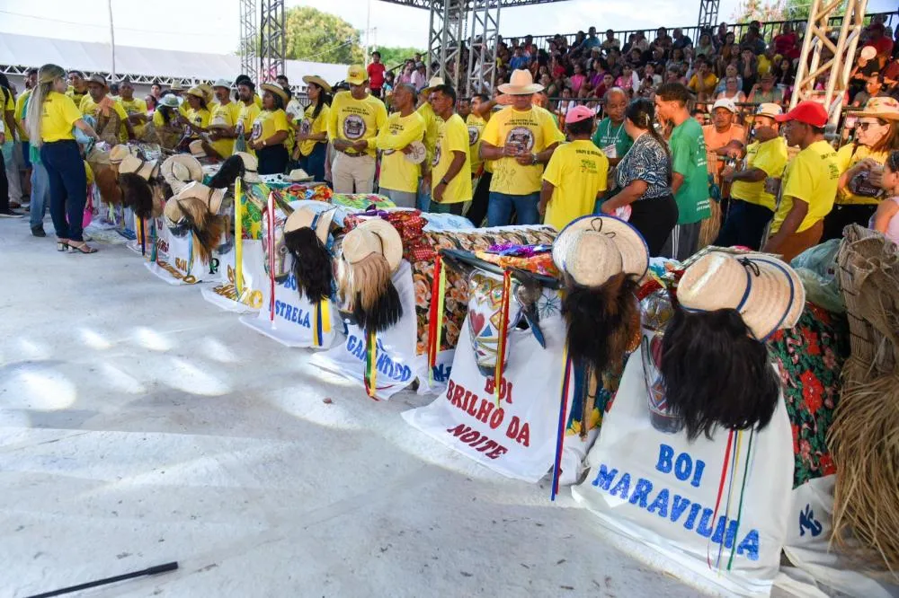
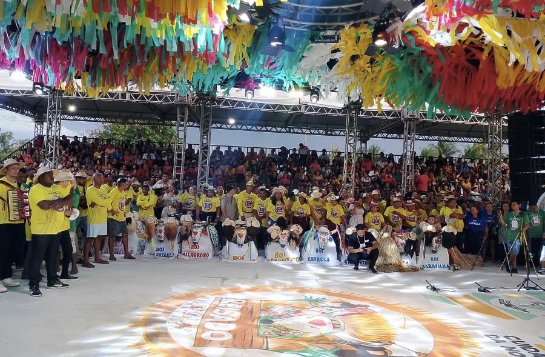

Os Bois do Reisado
Conheça os bois que fazem parte da tradição cultural de Boa Hora, seus nomes, proprietários e localidades de origem.
Conhecer os Bois
Preservando a tradição dos bois de Boa Hora–PI
Conheça a tradição dos bois do Reisado de Boa Hora, no Piauí. Explore nossa cultura, acompanhe a agenda das apresentações e descubra a história dessa manifestação cultural.
O Reisado é uma manifestação cultural tradicional que reúne música, dança, personagens, celebrações e a participação das comunidades.
Em Boa Hora, no Piauí, a tradição dos bois integra a identidade cultural do município e é transmitida entre gerações.
O Reisado Digital 2.0 busca contribuir para a valorização dessa memória, organizando informações sobre os bois, seus proprietários, as localidades e a programação das apresentações.

Conheça os bois que fazem parte da tradição cultural de Boa Hora, seus nomes, proprietários e localidades de origem.
Conhecer os Bois
Descubra a programação cultural e acompanhe as apresentações dos bois durante o período das festividades.
Ver AgendaConfira as próximas apresentações cadastradas no Reisado Digital 2.0.
Conheça os bois do Reisado de Boa Hora, seus proprietários e os bairros ou localidades onde estão cadastrados. Clique nos ícones para visualizar as informações culturais.
O mapa apresenta referências culturais cadastradas no sistema. Não existe rastreamento GPS em tempo real.
Abrir mapa completo